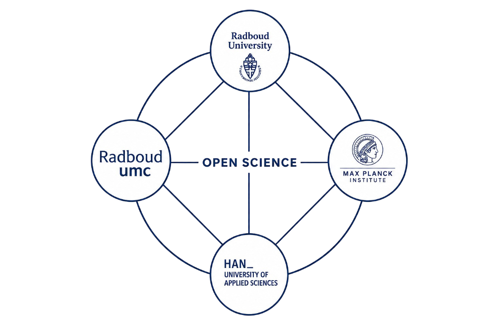

Connect
Meet researchers, students and professionals across Nijmegen and share ideas about Open Science.

Building a more open and collaborative research culture across Nijmegen by connecting researchers, students and professionals.

Meet researchers, students and professionals across Nijmegen and share ideas about Open Science.
Discover workshops, discussions and resources that help you explore open research practices.
Work together to build a more transparent, inclusive and reproducible research culture.
Open Science Community Nijmegen (OSCN) is a bottom-up network connecting researchers, students and professionals who want to make research more open, transparent and collaborative.
We bring people together through events, workshops and discussions to support the adoption of Open Science practices and contribute to a more open research culture.
Learn more →
Discover the people and projects behind Open Science Community Nijmegen.

Open Science and Open Education are both growing. How can they strengthen each other?
Read more →This October, Delft will become the meeting place for the Dutch Open Science community.
Read more →Researchers share the moments that changed their perspective on open research.
Read more →Researchers from Radboud University, Radboudumc, HAN and MPI working together to strengthen Open Science.

Radboud University

Radboudumc

Radboud University

Radboud University

Max Planck Institute
Become part of a growing community that works together towards more open, transparent and collaborative research.